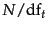
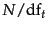
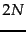
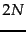
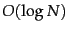
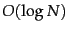

Figure 6.14 gives the basic algorithm for computing vector space scores. The array Length holds the lengths (normalization factors) for each of the  documents, whereas the array Scores holds the scores for each of the documents. When the scores are finally computed in Step 9, all that remains in Step 10 is to pick off the
documents, whereas the array Scores holds the scores for each of the documents. When the scores are finally computed in Step 9, all that remains in Step 10 is to pick off the  documents with the highest scores.
documents with the highest scores.
The outermost loop beginning Step 3 repeats the updating of Scores, iterating over each query term  in turn. In Step 5 we calculate the weight in the query vector for term
in turn. In Step 5 we calculate the weight in the query vector for term  . Steps 6-8 update the score of each document by adding in the contribution from term
. Steps 6-8 update the score of each document by adding in the contribution from term  . This process of adding in contributions one query term at a time is sometimes known as term-at-a-time scoring or accumulation, and the
. This process of adding in contributions one query term at a time is sometimes known as term-at-a-time scoring or accumulation, and the  elements of the array
elements of the array  are therefore known as accumulators . For this purpose, it would appear necessary to store, with each postings entry, the weight
are therefore known as accumulators . For this purpose, it would appear necessary to store, with each postings entry, the weight
 of term
of term  in document
in document  (we have thus far used either tf or tf-idf for this weight, but leave open the possibility of other functions to be developed in Section 6.4 ). In fact this is wasteful, since storing this weight may require a floating point number. Two ideas help alleviate this space problem. First, if we are using inverse document frequency , we need not precompute
(we have thus far used either tf or tf-idf for this weight, but leave open the possibility of other functions to be developed in Section 6.4 ). In fact this is wasteful, since storing this weight may require a floating point number. Two ideas help alleviate this space problem. First, if we are using inverse document frequency , we need not precompute  ; it suffices to store  at the head of the postings for
; it suffices to store  at the head of the postings for  . Second, we store the term frequency
. Second, we store the term frequency
 for each postings entry. Finally, Step 12 extracts the top
for each postings entry. Finally, Step 12 extracts the top  scores - this requires a priority queue data structure, often implemented using a heap. Such a heap takes no more than  comparisons to construct, following which each of the
scores - this requires a priority queue data structure, often implemented using a heap. Such a heap takes no more than  comparisons to construct, following which each of the  top scores can be extracted from the heap at a cost of  comparisons.
top scores can be extracted from the heap at a cost of  comparisons.
Note that the general algorithm of Figure 6.14 does not prescribe a specific implementation of how we traverse the postings lists of the various query terms; we may traverse them one term at a time as in the loop beginning at Step 3, or we could in fact traverse them concurrently as in Figure 1.6 . In such a concurrent postings traversal we compute the scores of one document at a time, so that it is sometimes called document-at-a-time scoring. We will say more about this in Section 7.1.5 .
Exercises.